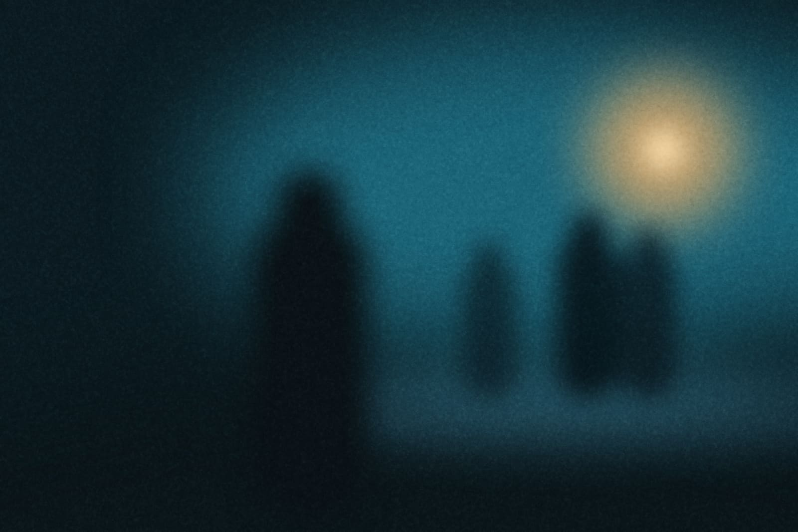

gozo brand assets
Logos, type, colour and a few scenes. Grab what you need.

The crossingWaiting on the light with nothing left to carry. It shipped before
dinner.
Download all assets
Naming
gozo is the brand
name, always lowercase, even at the start of a sentence.
It is one word. Do not write Gozo, GoZo, gozo CLI or gozo.dev as the
name. In Spanish and Portuguese, gozo means joy. That is the
point.
Logo
Wordmark for recognition, symbol when space is tight. Ink on paper,
paper on ink. Do not alter the files.
Lockup · inkSVG
Lockup · paperSVG
Wordmark · inkSVG
Wordmark · paperSVG
Symbol · inkSVG
Symbol · paperSVG
Favicon · 64, 32, 16SVG
Social preview · 1280 × 640PNGSVG
The seed. Three
petals folded together, about to open. gozo means joy; the seed is the
version of it that fits in a favicon. The petals are one shape repeated
at 120°, tilted 15° so the mark leans forward, with a 3 unit gap at the
centre that survives down to 12 px.
Typography
Instrument Serif for headlines, Geist for the reading, Geist Mono for
the terminal. All three are open source. Shown the way they are used: as
a scale, not a sample.
D88gozo brand
H44The joy of Go, handled.
H28Ship at five. Dinner at six.
L19One binary. Every Go workflow.
B16gozo wraps the go command with the workflow of Vercel CLI.
S13 500Wordmark · ink
C14 monogozo deploy --prod [42s]
Instrument SerifRegular · display
Aa Gg Qq Rr Zz
0123456789
gozo gozo
cap 0.70x 0.44tracking −2%
Geist400 · 500 · 600
Regular.
Medium.
Semibold.
Aa Bb Cc 0123
body 16/24ui 13 to 15tracking 0
Geist Mono400 · terminal
$ gozo doctor
✓
!
✗
> -
0O
1l Il {} [] => ->
code 14/22ligatures offtabular
Colour
Two colours. Ink and paper. Everything else is the terminal’s own
palette, so gozo looks at home in every theme.
Ink#101828 · text, wordmark, buttons
Paper#FCFCFD · backgrounds
Ash#667085 · secondary text
Line#E4E7EC · borders, dividers
$ gozo deploy --prod
> Deploying api to kubernetes
(production) ✓ docker
27.1.0 ✓ Deployed ghcr.io/acme/api:3f9c2a1
[42s] ! 2
dependencies can be updated
https://api.acme.dev
Voice
Short sentences that end. Second person. Calm, never hyped. Say what
happened, then stop.
Deployed. Logs are one command away.
🚀 Successfully deployed your application!
Ship at five. Dinner at six.
Supercharge your developer productivity
It never forgets to tidy, so you don’t either.
Powerful dependency management built in
One binary. Every Go workflow.
The all-in-one toolkit for modern Go development
Scenes
Four scenes for screens, headers and social. Every one is dusk with a
single warm light.
Last lightThe floodlight comes on before the sky goes. Somebody already
went home.
WeatherIt rained anyway. The deploy did not notice.
After hoursDinner ran long. Nobody checked a phone.
Blue hour, not night. One warm light in a teal world: a floodlight, a
raincoat, a shop sign. Wet surfaces, visible grain, people from behind
or small in the frame, the work already done. Shot on the street, never
rendered.